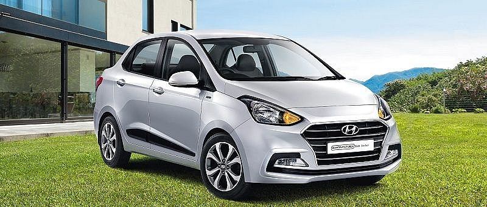
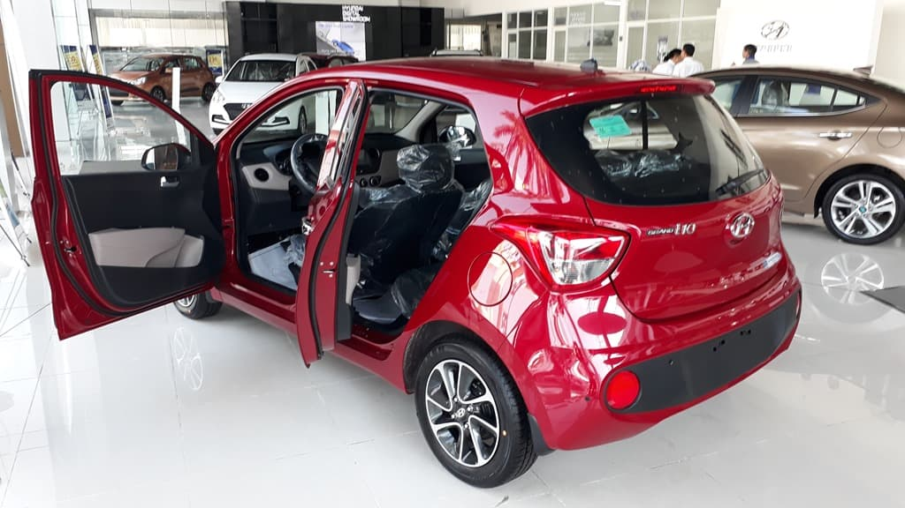

Mô Tả Chi Tiết
Ngoại Thất


Gói gọn trong kích thước tổng thể Dài x Rộng x Cao tương ứng 3.805 x 1.680 x 1.520 mm
cùng với những đường nét tinh tế giúp Hyundai Grand i10 1.2 MT 2022 trở thành chiếc xe
rộng rãi nhất trong cùng phân khúc như Kia Morning và Vinfast Fadil, Toyota Wigo.
Gói gọn trong kích thước tổng thể Dài x Rộng x Cao tương ứng 3.805 x 1.680 x 1.520 mm
cùng với những đường nét tinh tế giúp Hyundai Grand i10 1.2 MT 2022 trở thành chiếc xe
rộng rãi nhất trong cùng phân khúc như Kia Morning và Vinfast Fadil, Toyota Wigo.
Hyundai Grand i10 1.2 MT Base được trang bị gương chỉnh điện, gập bằng tay,
lazang thép 14 inch.Cụm đèn trước tích hợp đèn pha, đèn cốt,
đèn xi nhan sử dụng bóng đèn halogen.Lưới tản nhiệt hình lục giác cỡ lớn giúp tăng hiệu
quả làm mát động cơ.Grand i10 bản thiếu không đượctrang bị đèn sương mù, tuy nhiên nhà
sản xuất vẫn trang bị hốc chờ để có thể lắp thêm.
Nội Thất
Là một mẫu xe phân khúc A có chiều dài cơ sở 2.450 mm, Hyundai Grand i10 được đánh
giá caovới không gian nội thất khá thoải mái. Các ghế ngồi được thiết kế với
chất liệu nỉ cao cấp, kết hợp hai tông màu đen viền chỉ đỏ thời trang, trẻ trung.
Cả hai hàng ghế trước và sau đều có tựa lưng lớn và ôm sát, hàng ghế sau có đủ tựa
đầu dành cho ba hành khách.Cốp sau rộng rãi, hàng ghế thứ hai có thể gập phẳng
giúp mở rộng khoang chở đồ. Ngoài ra các ngăn chứa đồ cũng bố trí ở phía trước,
cạnh cần số và trên cửa xe, mang đến nhiều tiện ích hơn cho mọi hành khách.
Vận Hành Tiết Kiệm Và Hiệu Quả
Hyundai trang bị cho Grand i10 1.2 MT Base mẫu động cơ Kappa dung tích 1.2 lít
được thiết kế với vật liệu nhẹ nhằm giảm trọng lượng xe, bên cạnh đó tăng hiệu
quả sử dụng nhiên liệu vào khoảng 5.7 lít/100km ở đường hỗn hợp.
Động cơ xăng Kappa có dung tích 1.2l, 16 Van kết hợp cùng công nghệ Dual VTVT
đem đến sự hiệu quả về tiêu thụ nhiên liệu cũng như sự bền bỉ trong vận hành.
Công suất và momen xoắn mà động cơ 1.2 lít cung cấp là 83 mã lực tại
6.000 vòng/phút và momen xoắn cực đại 114 N.m tại 4.000 vòng/phút.
Hệ thống truyền động cầu trước cùng hộp số sàn 5 cấp, ngoài ra khoảng sáng
gầm 157 mm cùng hệ thống treo MCPherson giúp Grand i10 hoạt động êm ái,
tối ưu và tiết kiệm nhiên liệu.